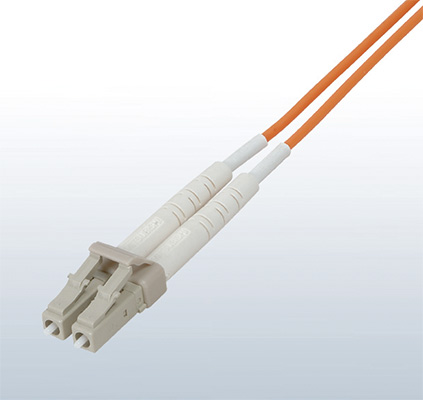

Network-related products |
Programmable Controllers MELSEC
CC-Link IE Line Up


Options
Industrial switching hub
Powered by CONTEC
- Supports the transmission speed of 10 Mbps/100 Mbps/1 Gbps
- Equipped with Auto MDI/MDI-X and auto-negotiation functions
- Saves up to 60% power consumption*2 by using the automatic power adjustment function
- Operates in ambient temperatures of 0 to 50°C, with the fan-less configuration
- Compatible with DIN rail installation, enabling the hub to be installed in various orientations
- *1.The rated input voltage is 12 to 24 V DC.
- *2.For comparison, power consumption was measured when all 8 ports were used and not used.
This product was developed and manufactured by Contec Co. Ltd. Please note that the specifications and conditions of guarantee differ from MELSEC Series products.
Managed CC-Link IE switch
- Supports the transmission speed of 10 Mbps/100 Mbps/1 Gbps
- Connectable to CC-Link IE and Ethernet devices simultaneously
- ERP- and LA- style redundant topologies between switches continue communication at network failure including cable disconnection, by switching network paths
- With an SFP transceiver*4, long-distance optical cable, which is ideal for systems requiring facility-to-facility landline communication is available
- Supports VLAN and can manage multiple networks by one switch
- Supports SNMP, which enables monitoring of the entire network and easy identification of faulty areas (system maintainability is improved with this feature)
- *3.The rated input voltage is 24 V DC.
Using along Ethernet network
One managed CC-Link IE switch is connectable to CC-Link IE and Ethernet networks simultaneously without requiring special network configuration
ERP redundant topology
Redundant network paths between switches enable a system to be continuously operated in case of failure
When an error occurs, communications are re-established
via an alternative network line (within 10 ms)
SFP for long-distance communication
With its long-distance data transmission feature, optical cables are ideal for facility-to-facility long-distance communications
- *4.Either the optical port (OPT1/OPT2) or RJ45 port (P1/P2) can be used at a time.
Multiple networks with VLAN
One switch can connect to multiple CC-Link IE networks
FA Partner Products
Mitsubishi Electric System & Service
For details of Mitsubishi Electric System & Service Co., Ltd. products, please contact us via email.
<Sales office> FA PRODUCT DIVISION
mail:osb.webmaster@melsc.jp
Industrial switching hub
 *5
*5


- Compatible with 10 Mbps/100 Mbps/1 Gbps transmission speed
- Compact size unit with 5 ports
- Supports 12 V DC up to 48 V DC wide voltage-range. Two power supply inputs (redundant power supply) are possible
- Supports the line, star, line and star combination network topologies
- Complies with UL/CE/FCC standards enabling export to Europe and North America
- *5.Class A device
Only CC-Link IE Field Network Basic
- Supports CC-Link IE Field Network Basic
- Compatible with 10 Mbps/100 Mbps transmission speed
- Compact size unit with 5 ports and 8 ports
- Supports 12 V DC up to 48 V DC wide voltage-range
- Complies with UL/CE/FCC standards enabling export to Europe and North America
Only CC-Link IE Field Network Basic
- Supports CC-Link IE Field Network Basic
- Compatible with 10 Mbps/100 Mbps transmission speed
- Compact size unit with 5 ports
- Supports 10 V DC up to 30 V DC wide voltage-range. Two power supply inputs (redundant power supply) are possible
- Complies with UL/CE/FCC standards enabling export to Europe and North America
Ethernet cable
- 1000BASE-T Standard compliant. This Ethernet cable with double shield has an outstanding shield performance
- Available in lengths from 1 m to 100 m (in 1 m increments). For using in indoor movable area, available lengths are from 1 m to 45 m. Available in lengths less than 1 m also
| Item | SC-E5EW-S□M*6 | SC-E5EW-S□M-MV*7 | SC-E5EW-S□M-L*8 |
|---|---|---|---|
| Cable type | Category 5e or higher, (double shielded/STP) Straight cable | ||
| Number of core wires | 8 wires (4 twisted pairs) | ||
| Double shield | Aluminum/polyester tape, Tin-plated annealed copper wire braid | ||
| Installation environment | Indoor | Indoor movable | Indoor/outdoor |
| Finished outside diameter | Flame retardant PVC, 6.8 mm | Flame retardant PVC, 6.5 mm | LAP sheath, 10 mm |
| Connector | RJ-45 connector with shield, straight connection | ||
| Conforming standards | IEEE802.3 1000BASE-T ANSI/TIA/EIA-568-B (Category 5e) ISO/IEC 11801 |
||
- *6.“□” in the model name denotes a cable length (0.5 m, from 1 m up to 100 m in 1 m increments).
- *7.“□” in the model name denotes a cable length (0.1 m, 0.2 m, 0.3 m, 0.5 m, from 1 m up to 45 m in 1 m increments).
- *8.“□” in the model name denotes a cable length (from 1 m up to 100 m in 1 m increments).
Inline coupler
- 8 conductor RJ-45 female to female, shielded, fits standard type Keystone Wall Plate
- Can be used in patch panels, wall jacks, or to extend cable lengths
| Item | Specifications |
|---|---|
| Adaptable connector | RJ-45 connector with shield |
| Operable temperature | -10…60°C |
| Conforming standards | IEEE 802.3 1000BASE-T ANSI/TIA/EIA-568-B (Category 5e) ISO/IEC 11801 |
Industrial media converter
- Converting 1000BASE-T/100BASE-TX to 1000BASE-LX/SX and vice versa can extend the station to station distance (DMC-1000TL-DC: maximum 10 km, DMC-1000TS-DC: maximum 550 m)
- Noise immunity performance ideal for FA environments ensures use as noise/lightening measures to protect communication line
- Complies with UL/CE/FCC standards enabling export to Europe and North America
Application example (DMC-1000TL-DC)
Specification*9
| Item | DMC-1000TL-DC | DMC-1000TS-DC | |
|---|---|---|---|
| Conforming standard | IEEE802.3z (1000BASE-LX) |
IEEE802.3z (1000BASE-SX) |
|
| Compatible cable |
Type | 1000BASE-LX compatible single mode optical cable |
1000BASE-SX compatible Multi-mode optical cable (core/clad: 50/125 µm Band: 500 MHz·km or higher λ = 850 nm) |
| Connector | Double LC connector (IEC 61754-20) | ||
| Method for connection |
Crossing (A to B, B to A) | ||
| Transmission distance | Max. 10 km | Max. 550 m | |
- *9.Specifications described is about the configuration using optical cables only. For further details, please refer to the relevant product manuals.
Optical cable
- QP-AW is made of plastic material having break-proof*10 and superior bending characteristics*11
- A wide range of lineup supports versatile environments. CC-Link Partner Association recommended products
- The indoor and outdoor use cables are free of tension members, and have an allowable tension equivalent to the reinforced type for outdoor use that allows them to be pulled directly
- QG-BU for indoor use supports the high flame resistant UL Listed (UL Type OFNR) compatible cable that has passed the UL1666 Riser Flame Test
- Reinforced type outdoor use cables are waterproof, and can be used even in flooded or temporarily submerged areas
- A connector boot with improved bending characteristics reduces the possibility of fiber breakage at the connector base

LCF connector
Duplex LC connector
(IEC 61754-20)
| Model | QP-AW*12 | QG-AW | QG-B | QG-BU | QG-VCT | QG-C | QG-DL | |||
|---|---|---|---|---|---|---|---|---|---|---|
| Operating environment/ application |
In the control panel |
In the control panel |
Indoor | Indoor, UL approved |
Indoor, movable |
Outdoor | Outdoor, reinforced (water shielding) |
|||
| Max. cable length | 10 m | 550 m | ||||||||
| Optical fiber types | Multi-mode optical fiber (GI) | |||||||||
| Material/ outer diameter |
Core | Plastic/ 55 ± 5 µm |
Fused quartz/50 ± 3 µm | |||||||
| Clad | Plastic/ 490 ± 5 µm |
Fused quartz/125 ± 2 µm | ||||||||
| Code jacket |
Material | PVC (blue) | PVC (orange) | |||||||
| Outer diameter |
Ø2.0 mm × 2 |
Ø2.0 mm × 2 |
Ø2.0 mm × 2 |
Ø1.8 mm × 2 |
Ø2.0 mm × 2 |
Ø2.0 mm × 2, 4, 6, 8 |
||||
| Cable jacket |
Material | - | - | Flame retardant PE (orange) |
Flame retardant PVC (blue) |
Elastic PVC (orange) |
Flame retardant PE (black) |
LAP sheath (black) |
||
| Outer diameter |
- | - | Ø6.0 mm | Ø5.0 mm | Ø6.0 mm | 2, 4 cores | 10.0 mm | |||
| 6 cores | 11.0 mm | |||||||||
| 8 cores | 12.0 mm | |||||||||
| Operable temperature range | -20…60°C | |||||||||
| Adaptable connector | LCF connector*13, SC connector*12, FC connector*12 | |||||||||
- *10.The allowable tension is about twice the QG-AW.
- *11.The allowable bending radius is about 1/2 times the QG-AW.
- *12.The QP-AW does not support the following.
• SC, FC connector
• Processing of connectors at the site, fusion splice
• Splice connection of connectors
• Media converter and connection terminal - *13.Use LCF connector for connection to the CC-Link IE Controller Network products. (LCF connector: two LC connectors are connected) When installing CC-Link IE Controller Network-compatible optical cable, please refer to the installation manual of the CC-Link Partner Association.
Standard accessories: Protective holder*14
(One protective holder is enclosed per cable.)
Features
- Protects the cable connector base prevents breakage
- Maintains minimum bending radius
- Saves space in control panel (60 mm or less from the front of programmable controller to end of protective holder)
- *14.The protective holder is dedicated to the Mitsubishi Electric System & Service Co., Ltd. A protective holder is not available as a single unit. It cannot be used with other LCF connector brands.
Connector insertion tool
- Insert or remove connectors easily, even in tight spaces such as crowded control panels
Applicable connector…LCF/LC/SC/MU connector
Splice adapter
- Extends optical cable (Splice connection)
- Temporary connection for stations which may be extended later
Applicable connector
| Type | Model | Specifications |
|---|---|---|
| Splice adapter for LCF Connector | SPAD-LCF-G50 | Splice adapter for LCF connector, multimode 2 cores Connection loss: 0.3 dB (with master fiber) |
| Splice adapter for SC Connector | SPAD-SCF-G50 | Splice adapter for SC connector, multimode 2 cores Connection loss: 0.3 dB (with master fiber) |
| Splice adapter for FC Connector | SPAD-FC-G50 | Splice adapter for FC connector, multimode 1 core Connection loss: 0.3 dB (with master fiber) |
SPAD-LCF-G50
Industrial media converter
- When the station-to-station distance is greater than 550 m, two of these units with optical cable can extend the total station-to-station distance up to 15 km
- Equipped with the link pass through function, this converter supports the network loop-back function in case of a cable disconnection
Application example
Specifications
| Item | DMC-1000SL-DC | ||
|---|---|---|---|
| OPT1 port | OPT2 port | ||
| Conforming standard | IEEE802.3z Gigabit Ethernet (1000BASE-LX) |
IEEE802.3z Gigabit Ethernet (1000BASE-SX) |
|
| Transmission format | Full duplex system | ||
| Compatible cable |
Optical fiber | 1000BASE-LX compatible single-mode optical cable |
1000BASE-SX compatible multi-mode optical cable*16 (core/clad 50/125 µm area 500 MHz·km or higher λ = 850 nm) |
| Connector | Duplex LC connector (IEC 61754-20 compliant) | ||
| Method for connection |
Crossing (A to B, B to A) | ||
| Power supply specification | 20.4…26.4 V DC (Power supply terminal block) | ||
| Standards | UL, CE, FCC Part15 Class B, VccI Class B | ||
| Max. number of connectable devices between stations |
4 | ||
- *15.Multi-mode optical cable can be also used for connection. The transmission distance is up to 550 m.
- *16.To connect to the CC-link IE Controller Network product, use the Mitsubishi Electric System & Service QG Series optical cable.
Connection terminal
- Enables up to 3 stations to be added between existing stations
- With stations that can easily be added or removed, the maintainability is improved
- Allows for expansion of the network without having to change the existing cabling
- Installable on the DIN rail or with screw brackets
Communication configuration example
Specifications
| Item | Specifications | |
|---|---|---|
| Applicable optical cable |
1000 BASE-SX (MMF)-compatible optical cable |
|
| Standard | IEC 60793-2-10 Types A1a.1 (50/125 µm multimode) |
|
| Transmission loss (max.) |
≤ 3.5 dB/km (λ = 850 nm) | |
| Transmission band (min.) |
≥ 500 MHz·km (λ = 850 nm) | |
| Model | QG Series*19 | |
| Applicable optical connector |
Duplex LC connector | |
| Standard | IEC 61754-20: Type LC connector | |
| Connection loss | ≤ 0.3 dB | |
| Polished face | PC polish | |
| Model | DLCF-G50-D2*19 | |
| Number of possible connections | Max. 3 units*17 | |
| Connection distance | Max. 150 m*20 | |
- *17.At least one unit should be connected to the connection terminal.
- *18.The solid black lines represent cables with a maximum distance of 150 m. If any station goes down, the loop back function will still be operational.
- *19.Parts provided by Mitsubishi Electric System & Service.
- *20.Cable length from SC-ECT-P3 to any other connection point.
The products listed here are manufactured by Mitsubishi Electric System & Service Co., Ltd. Please note that the specifications and guarantee conditions of the products are different from the MELSEC Series products.